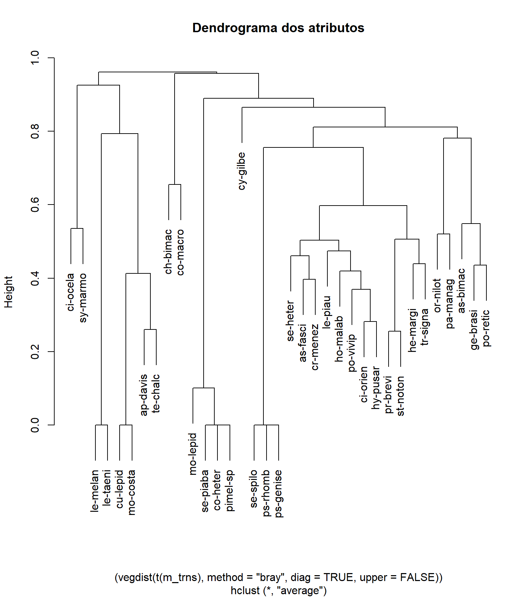
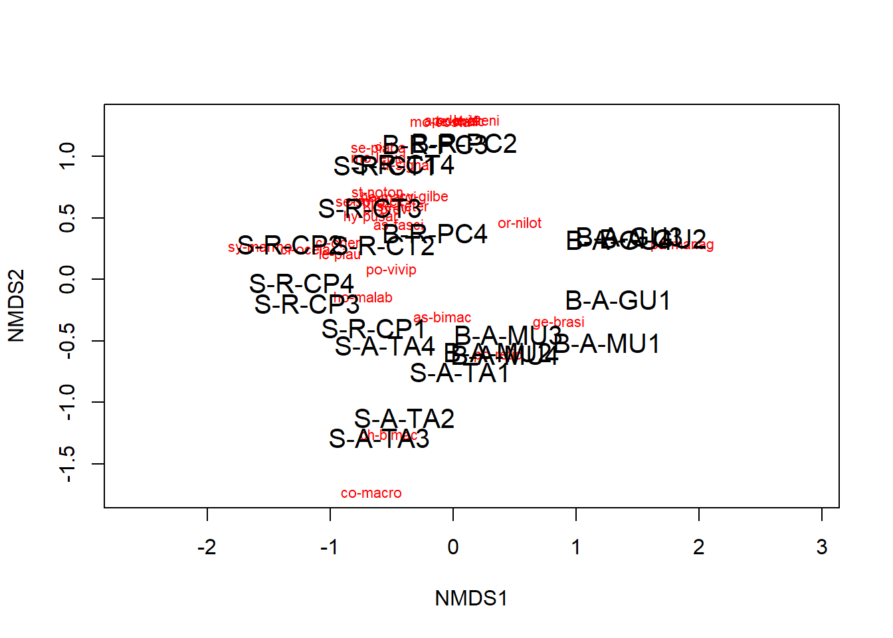
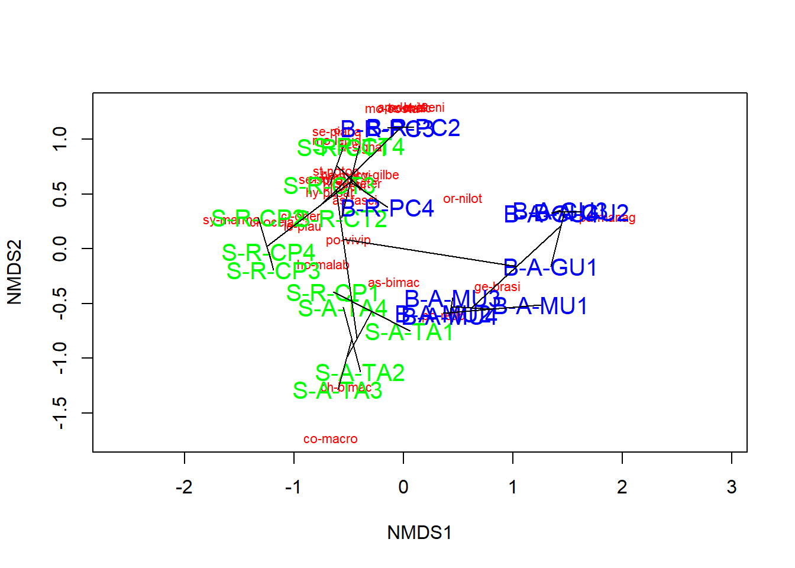
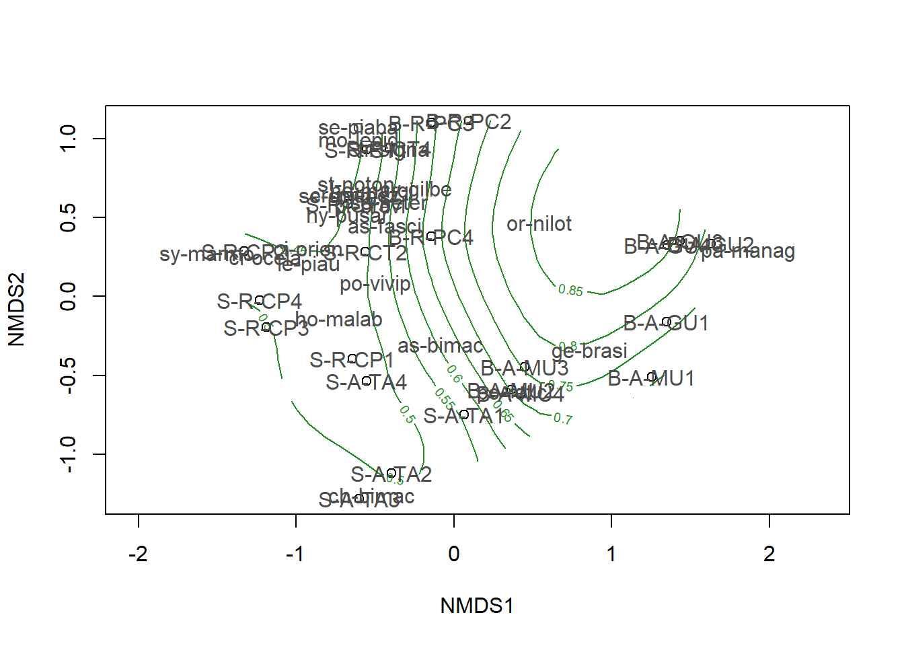

20 R Modulo 10.2 - Análise de Ordenação - NMDS
RESUMO
O Escalonamento Multidimensional Não-Métrico, também conhecido como NMDS ou MDS não-métrico (Multidimensional Scaling), é uma técnica estatística útil em situações onde as relações entre os pontos são importantes, mas as distâncias exatas entre eles podem não ser facilmente quantificáveis ou interpretáveis. Além da Ecologia, o NMDS é frequentemente usado em áreas como análise de dados, psicometria, ciência social, visualização de dados e aprendizado de máquina.
Apresentação
O Escalonamento Multidimensional Não-Métrico, também conhecido como NMDS ou MDS não-métrico (Multidimensional Scaling), é uma técnica estatística utilizada para representar dados com muitas dimensões em um espaço dimensional menor, de forma que a estrutura dos dados originais seja preservada o máximo possível.
Ao contrário do MDS métrico, que preserva as distâncias entre os pontos, o MDS não-métrico preserva apenas as relações de ordem ou similaridade entre os pontos, sem assumir uma relação linear com as distâncias reais. Em outras palavras, ele se concentra em preservar as relações de proximidade entre os pontos, mas não necessariamente suas distâncias exatas.
A técnica funciona construindo uma matriz de similaridade a partir dos dados originais e, em seguida, posicionando os pontos em um espaço de menor dimensão de forma que as distâncias ou similaridades relativas sejam mantidas o mais fiel possível à matriz original.
O MDS não-métrico é útil em situações onde as relações entre os pontos são importantes, mas as distâncias exatas entre eles podem não ser facilmente quantificáveis ou interpretáveis. Além da Ecologia, o NMDS é frequentemente usado em áreas como análise de dados, psicometria, ciência social, visualização de dados e aprendizado de máquina.
20.1 Algoritmo da NMDS
O algoritmo de uma NMDS (Non-Metric Multidimensional Scaling) funciona de maneira a posicionar os pontos de dados em um espaço de menor dimensão de forma que as relações de ordem ou similaridade entre os pontos sejam preservadas o máximo possível.
Aqui está uma visão geral de como o algoritmo de NMDS opera:
Matriz de Similaridade: O algoritmo começa com uma matriz de similaridade ou dissimilaridade que captura as relações entre os pontos de dados. Essa matriz pode ser baseada em diferentes medidas, como correlações, coeficientes de similaridade, distâncias euclidianas, entre outras.
Inicialização: Inicialmente, os pontos são atribuídos a posições aleatórias ou em uma configuração inicial no espaço de menor dimensão.
Ajuste Iterativo: O algoritmo itera para melhorar as posições dos pontos no espaço de menor dimensão. Durante cada iteração, os pontos são movidos em direção a uma configuração que melhor preserve as relações de similaridade ou dissimilaridade conforme definido pela matriz de similaridade.
Critério de Convergência: O processo iterativo continua até que um critério de convergência seja alcançado. Isso pode ser baseado na estabilidade das posições dos pontos ou na convergência de uma função de custo que quantifica a discrepância entre as relações de similaridade na configuração original e na configuração reduzida.
Saída: Uma vez que o algoritmo convergiu, as posições finais dos pontos no espaço de menor dimensão são utilizadas como representações dos dados para visualização ou análise.
20.3 Pacotes do módulo
Instalando os pacotes necessários para esse módulo. Nos computadores do Laboratório de Ecologia não instale esses pacotes, eles já estão instalados.
#dir <- getwd() #criamos um vetor com o diretório de trbalho
#shell.exec(dir) #abre o diretorio de trabalho no Windows Explorer
library(openxlsx)
ppbio <- read.xlsx("D:/Elvio/OneDrive/Disciplinas/_EcoNumerica/5.Matrizes/ppbio06p-peixes.xlsx",
rowNames = T, colNames = T,
sheet = "Sheet1")
str(ppbio)
#View(ppbio)
ppbio[1:5,1:5] #[1:5,1:5] mostra apenas as linhas e colunas de 1 a 5.
t_grps <- read.xlsx("D:/Elvio/OneDrive/Disciplinas/_EcoNumerica/5.Matrizes/ppbio06-grupos.xlsx",
rowNames = T,
colNames = T,
sheet = "peixesp")20.5 Classificação 1: Matriz comunitária
Para conhecermos os dados, vamos criar uma classificação baseada na distância Bray-Curtis e UPGMA como método de fusão, a partir das matrizes de dados de interesse ppbio** com suas devidas relativizações e transformações.
20.5.1 Dendrograma e Heatmap 1
#Dendrograma
library(vegan)
m_trns <- asin(sqrt(decostand(m_trab,
method="total", MARGIN = 2)))
#m_trns <- sqrt(m_trab)
vegdist <- vegdist(m_trns, method = "bray",
diag = TRUE,
upper = FALSE)
cluster_uas <- hclust(vegdist, method = "average")
plot (cluster_uas, main = "Cluster Dendrogram - Bray-Curtis da Matriz Comunitária",
hang = 0.1) #testar com -.01
#rect.hclust(cluster_uas, k = 3, h = NULL)
#h = 0.8 fornece os grupos formados na altura h
as.matrix(vegdist)[1:6, 1:6]
#Heatmap
library("gplots")
heatdist <- as.matrix(vegdist)
col <- rev(heat.colors(999)) #rev() reverte as cores do heatmap
heatmap.2(x=(as.matrix(vegdist)), #objetos x objetos
Rowv = as.dendrogram(cluster_uas),
Colv = as.dendrogram(cluster_uas),
key = T, tracecol = NA, revC = T,
col = heat.colors, #dissimilaridade = 1 - similaridade
density.info = "none",
xlab = "UA´s", ylab = "UA´s",
mar = c(6, 6) + 0.2)
cluster_spp <- hclust((vegdist(t(m_trns), method = "bray",
diag = TRUE,
upper = FALSE)), method = "average")
plot (cluster_spp, main = "Dendrograma dos atributos")
heatmap.2(t(as.matrix(m_trns)), #objetos x atributos
Colv = as.dendrogram(cluster_uas),
Rowv = as.dendrogram(cluster_spp),
key = T, tracecol = NA, revC = T,
col = col,
density.info = "none",
xlab = "Unidades amostrais", ylab = "Espécies",
mar = c(6, 6) + 0.1) # adjust margin size## S-R-CT1 S-R-CP1 S-A-TA1 S-R-CT2 S-R-CP2 S-A-TA2
## S-R-CT1 0.0000000 0.8743721 0.9338269 0.6274997 0.8106894 0.9420728
## S-R-CP1 0.8743721 0.0000000 0.6833816 0.7759468 0.7726098 0.7342613
## S-A-TA1 0.9338269 0.6833816 0.0000000 0.8789631 0.9178304 0.5700984
## S-R-CT2 0.6274997 0.7759468 0.8789631 0.0000000 0.7280378 0.8836068
## S-R-CP2 0.8106894 0.7726098 0.9178304 0.7280378 0.0000000 0.8915271
## S-A-TA2 0.9420728 0.7342613 0.5700984 0.8836068 0.8915271 0.0000000



20.5.2 Histórico das fusões 1
Criamos agora o histórico das fusões dos objetos. Na tabela gerada, as duas primeiras colunas (No. e UA) representam o número (No.) atribuido a cada unidade amostral (UA). As duas colunas subsequentes (Cluster1 e Cluster2) representam o par de objetos (indicado pelo sinal de “-”) ou grupo de objetos (indicado pela ausência do sinall de “-”) que foram agrupadas. A coluna Height, indica o valor de similaridade na qual um dado par de objetos (ou grupo de objetos) foi agrupado. O valor aproximado de Height também pode ser visualizado no eixo do dendrograma. Por último, na coluna Histórico, é mostrada a sequência das fusões da primeira até a m-1 última fusão entre os dois últimos grupos. Nesse caso, 22.
library(tidyverse)
library(gt)
merge <- as.data.frame(cluster_uas$merge)
merge[nrow(merge)+1,] = c("0","0")
height <- as.data.frame(round(cluster_uas$height, 2))
height[nrow(height)+1,] = c("1.0")
fusoes <- data.frame(Cluster_uas = merge, Height = height)
colnames(fusoes) <- c("Cluster1", "Cluster2", "Height")
UA <- rownames_to_column(as.data.frame(m_trns[, 0]))
colnames(UA) <- c("UAs")
No.UA <- 1:nrow(fusoes)
fusoes <- cbind(No.UA, UA, fusoes)
fusoes$Histórico <- 1:nrow(fusoes)
#fusoes
gt(fusoes)| No.UA | UAs | Cluster1 | Cluster2 | Height | Histórico |
|---|---|---|---|---|---|
| 1 | S-R-CT1 | -20 | -23 | 0.14 | 1 |
| 2 | S-R-CP1 | -8 | -11 | 0.26 | 2 |
| 3 | S-A-TA1 | -17 | 1 | 0.28 | 3 |
| 4 | S-R-CT2 | -19 | -22 | 0.37 | 4 |
| 5 | S-R-CP2 | -6 | -12 | 0.41 | 5 |
| 6 | S-A-TA2 | -4 | -10 | 0.46 | 6 |
| 7 | S-R-CT3 | -16 | 4 | 0.48 | 7 |
| 8 | S-R-CP3 | -5 | 2 | 0.53 | 8 |
| 9 | S-A-TA3 | -13 | 7 | 0.56 | 9 |
| 10 | S-R-CT4 | -9 | 5 | 0.57 | 10 |
| 11 | S-R-CP4 | -7 | 6 | 0.59 | 11 |
| 12 | S-A-TA4 | -14 | 3 | 0.61 | 12 |
| 13 | B-A-MU1 | -2 | -3 | 0.68 | 13 |
| 14 | B-A-GU1 | -1 | 11 | 0.68 | 14 |
| 15 | B-R-PC2 | -15 | -18 | 0.69 | 15 |
| 16 | B-A-MU2 | -21 | 14 | 0.75 | 16 |
| 17 | B-A-GU2 | 10 | 13 | 0.76 | 17 |
| 18 | B-R-PC3 | 9 | 12 | 0.79 | 18 |
| 19 | B-A-MU3 | 8 | 16 | 0.8 | 19 |
| 20 | B-A-GU3 | 17 | 19 | 0.85 | 20 |
| 21 | B-R-PC4 | 15 | 20 | 0.89 | 21 |
| 22 | B-A-MU4 | 18 | 21 | 0.91 | 22 |
| 23 | B-A-GU4 | 0 | 0 | 1.0 | 23 |
20.6 Ordenação
O Escalonamento Multidimensional Não-Métrico (NMS ou NMDS) é uma ferramenta comumente usada para examinar a composição da comunidade. Vamos estabelecer algumas bases conceituais. Considere um único eixo de abundância representando uma única espécie Fonte:
O objetivo do NMDS é representar a posição original das comunidades em um espaço multidimensional da forma mais precisa possível, usando um número reduzido de dimensões que podem ser facilmente plotadas e visualizadas.
Por ser uma ordenação não-métrica o NMDS não utiliza as abundâncias absolutas das espécies nas comunidades, mas sim a ordem do seu “rank” estatístico (ou sua “ordenação). O uso de”ranks” ou ordenações omite alguns dos problemas associados ao uso de distâncias absolutas (por exemplo, sensibilidade à transformação) e, como resultado, é uma técnica muito mais flexível, que aceita uma variedade de tipos de dados.
O procedimento NMDS segue um algorítimo iterativo que ocorre em várias etapas:
- Definir as posições originais das comunidades em espaço multidimensional
- Especificar o número m de dimensões reduzidas (tipicamente 2)
- Construir uma configuração inicial das amostras em 2 dimensões
- Regressar distâncias nesta configuração inicial contra as distâncias observadas (medidas)
- Determinar o stress (discordância entre a configuração 2-D e os valores previstos da regressão). Se a configuração 2-D preservar perfeitamente os ranks originais de classificação, então um gráfico de um vs. o outro deve ser monotonicamente crescente (gráfico de Shepard). A extensão com que os pontos na configuração 2-D diferem dessa linha monotonicamente crescente determina o grau de stress
- Se o stress for alto, reposicione os pontos em m dimensões na direção do stress decrescente e repita até que o stress esteja abaixo de um certo limite.
Geralmente, stress < 0.05 fornece uma excelente representação em dimensões reduzidas, < 0.1 é ótimo, < 0.2 é bom, e stress > 0.3 fornece uma representação ruim.
NOTA: A configuração final pode diferir dependendo da configuração inicial (que normalmente é aleatória) e do número de iterações do algorítmo, então é aconselhável executar o NMDS várias vezes e comparar a interpretação das soluções de menor stress.
Para começar, o NMDS requer uma matriz de distâncias (ou uma matriz de dissimilaridades). Distâncias Euclidianas brutas não são ideais para este propósito: elas são sensíveis às abundâncias totais, então podem tratar locais com um número semelhante de espécies como mais semelhantes, mesmo que as identidades das espécies sejam diferentes. Elas também são sensíveis às ausências de espécies, então podem tratar locais com o mesmo número de espécies ausentes como mais semelhantes.
Consequentemente, os ecologistas usam o cálculo de dissimilaridade de Bray-Curtis, que possui muitas propriedades ideais:
- É invariante a mudanças em unidades
- Não é afetado por adições/remoções de espécies que não estão presentes em duas comunidades
- Não é afetado pela adição de uma nova comunidade
- Pode reconhecer diferenças nas abundâncias totais quando as abundâncias relativas são iguais.
Para executar a NMDS, usa-se a função metaMDS do pacote vegan.
Para executar a NMDS, usa-se a função metaMDS do pacote vegan. metaMDS requer uma matriz de comunidade-por-espécies (CPE, “community-by-species”). De momento, cria-se essa matrizcom dados amostradoes aleatóriamente de um cojunto arbitrário de valores.
A função metaMDS vai calcular as distâncias, executar o algorítimo iterativo, determna o stress ou fitting entre os conjuntos de dados e etc. Precisa-se apenas definir a matriz de comunidade-por-espécies. Nesse caso:
## Run 0 stress 0.1601399
## Run 1 stress 0.1601399
## ... New best solution
## ... Procrustes: rmse 1.48636e-06 max resid 4.762426e-06
## ... Similar to previous best
## Run 2 stress 0.1601399
## ... Procrustes: rmse 2.380709e-06 max resid 6.886123e-06
## ... Similar to previous best
## Run 3 stress 0.1601399
## ... New best solution
## ... Procrustes: rmse 1.355828e-06 max resid 4.689067e-06
## ... Similar to previous best
## Run 4 stress 0.1601399
## ... Procrustes: rmse 1.784654e-06 max resid 6.269961e-06
## ... Similar to previous best
## Run 5 stress 0.1601399
## ... New best solution
## ... Procrustes: rmse 1.091364e-06 max resid 3.175341e-06
## ... Similar to previous best
## Run 6 stress 0.1601399
## ... Procrustes: rmse 3.000764e-06 max resid 9.853888e-06
## ... Similar to previous best
## Run 7 stress 0.1601399
## ... Procrustes: rmse 1.191157e-06 max resid 3.000012e-06
## ... Similar to previous best
## Run 8 stress 0.1601399
## ... Procrustes: rmse 9.141497e-07 max resid 2.101769e-06
## ... Similar to previous best
## Run 9 stress 0.2078279
## Run 10 stress 0.1601399
## ... Procrustes: rmse 2.650655e-06 max resid 8.83245e-06
## ... Similar to previous best
## Run 11 stress 0.1972675
## Run 12 stress 0.1601399
## ... Procrustes: rmse 1.185218e-06 max resid 2.096014e-06
## ... Similar to previous best
## Run 13 stress 0.1601399
## ... New best solution
## ... Procrustes: rmse 8.104786e-07 max resid 1.805247e-06
## ... Similar to previous best
## Run 14 stress 0.1601399
## ... Procrustes: rmse 1.657221e-06 max resid 3.540145e-06
## ... Similar to previous best
## Run 15 stress 0.2199318
## Run 16 stress 0.1601399
## ... Procrustes: rmse 1.565273e-06 max resid 3.692174e-06
## ... Similar to previous best
## Run 17 stress 0.1601399
## ... Procrustes: rmse 8.341295e-07 max resid 1.419309e-06
## ... Similar to previous best
## Run 18 stress 0.1601399
## ... New best solution
## ... Procrustes: rmse 6.606092e-07 max resid 1.34269e-06
## ... Similar to previous best
## Run 19 stress 0.1601399
## ... Procrustes: rmse 6.394982e-07 max resid 9.480347e-07
## ... Similar to previous best
## Run 20 stress 0.2078279
## *** Best solution repeated 2 times##
## Call:
## metaMDS(comm = m_trns, k = 2)
##
## global Multidimensional Scaling using monoMDS
##
## Data: m_trns
## Distance: bray
##
## Dimensions: 2
## Stress: 0.1601399
## Stress type 1, weak ties
## Best solution was repeated 2 times in 20 tries
## The best solution was from try 18 (random start)
## Scaling: centring, PC rotation, halfchange scaling
## Species: expanded scores based on 'm_trns'Nesse exemplo, metaMDS aplicou automaticamente uma transformação da raiz quadrada e calculou as distâncias de Bray-Curtis para a matriz de comunidade-por-local.
Deve-se observar cada iteração do NMDS até que uma solução seja alcançada (ou seja, o stress foi minimizado após algum número de reconfigurações dos pontos em 2 dimensões). Pode-se aumentar o número padrão de iterações usando o argumento trymax =. Isso pode ajudar a aliviar problemas de não convergência. Se o stress for alto, pode-se aumentar o número de dimensões para k = 3.
## Run 0 stress 0.1105304
## Run 1 stress 0.1111279
## Run 2 stress 0.1111282
## Run 3 stress 0.1073495
## ... New best solution
## ... Procrustes: rmse 0.07078509 max resid 0.1956867
## Run 4 stress 0.1072835
## ... New best solution
## ... Procrustes: rmse 0.0221437 max resid 0.07183978
## Run 5 stress 0.1072833
## ... New best solution
## ... Procrustes: rmse 0.0001479742 max resid 0.0003523263
## ... Similar to previous best
## Run 6 stress 0.1091695
## Run 7 stress 0.1073496
## ... Procrustes: rmse 0.02217784 max resid 0.07198735
## Run 8 stress 0.1105306
## Run 9 stress 0.1072837
## ... Procrustes: rmse 0.0003378354 max resid 0.0008339771
## ... Similar to previous best
## Run 10 stress 0.1072836
## ... Procrustes: rmse 0.0002426655 max resid 0.0006080793
## ... Similar to previous best
## Run 11 stress 0.1072835
## ... Procrustes: rmse 0.0002310946 max resid 0.0005813784
## ... Similar to previous best
## Run 12 stress 0.1148151
## Run 13 stress 0.1148151
## Run 14 stress 0.1072894
## ... Procrustes: rmse 0.00180887 max resid 0.004939432
## ... Similar to previous best
## Run 15 stress 0.1072833
## ... Procrustes: rmse 4.431772e-05 max resid 0.0001068513
## ... Similar to previous best
## Run 16 stress 0.1105303
## Run 17 stress 0.1073493
## ... Procrustes: rmse 0.02213488 max resid 0.07189392
## Run 18 stress 0.1163012
## Run 19 stress 0.1073495
## ... Procrustes: rmse 0.02206039 max resid 0.07161019
## Run 20 stress 0.1105304
## *** Best solution repeated 6 times#distance = "manhattan", "euclidean", "canberra", "clark", "bray", "kulczynski", "jaccard", "gower", #"altGower", "morisita", "horn", "mountford", "raup", "binomial", "chao", "cao", "mahalanobis", "chisq", #"chord", "hellinger", "aitchison", or "robust.aitchison".Pode-se agora examinar o objeto NMDS.
##
## Call:
## metaMDS(comm = m_trns, distance = "bray", k = 3, trymax = 100)
##
## global Multidimensional Scaling using monoMDS
##
## Data: m_trns
## Distance: bray
##
## Dimensions: 3
## Stress: 0.1072833
## Stress type 1, weak ties
## Best solution was repeated 6 times in 20 tries
## The best solution was from try 5 (random start)
## Scaling: centring, PC rotation, halfchange scaling
## Species: expanded scores based on 'm_trns'## $sites
## NMDS1 NMDS2 NMDS3
## S-R-CT1 -0.55184543 0.92903240 0.67309796
## S-R-CP1 -0.64422074 -0.39586762 -0.57609214
## S-A-TA1 0.06337462 -0.75014403 -1.01396726
## S-R-CT2 -0.56368016 0.28369854 0.32785273
## S-R-CP2 -1.32840867 0.28533277 -0.09972257
## S-A-TA2 -0.39321633 -1.12251908 -0.52649396
## S-R-CT3 -0.67162538 0.58469847 0.85296793
## S-R-CP3 -1.18931582 -0.19592847 0.07278880
## S-A-TA3 -0.59855686 -1.28335380 0.04516662
## S-R-CT4 -0.40624697 0.94037183 0.11916157
## S-R-CP4 -1.22928790 -0.02480186 0.24910852
## S-A-TA4 -0.55105041 -0.53647766 0.29599403
## B-A-MU1 1.25467513 -0.51187249 0.16278582
## B-A-GU1 1.34839255 -0.15921423 -0.47982251
## B-R-PC2 0.09554426 1.11267181 -1.15925174
## B-A-MU2 0.36190986 -0.59036596 0.04099380
## B-A-GU2 1.62884577 0.33425248 0.26202181
## B-R-PC3 -0.14377797 1.10299453 -0.55148164
## B-A-MU3 0.44792178 -0.44744275 0.37859882
## B-A-GU3 1.43419849 0.34992690 0.24554745
## B-R-PC4 -0.14448803 0.38054762 -0.40790080
## B-A-MU4 0.42559878 -0.61216902 0.97820004
## B-A-GU4 1.35525942 0.32662963 0.11044671
##
## $species
## NMDS1 NMDS2 NMDS3
## ap-davis -0.01495781 1.29218956 -0.96364825
## as-bimac -0.08444554 -0.30195697 0.19874224
## as-fasci -0.43902511 0.45212432 0.29464859
## ch-bimac -0.51882751 -1.25772500 -0.14816822
## ci-ocela -1.19637071 0.25077439 -0.21174896
## ci-orien -0.92500918 0.30670709 0.38457115
## co-macro -0.66116054 -1.73538798 0.01457586
## co-heter -0.60339636 1.06826261 0.81358642
## cr-menez -0.62927305 0.63683147 0.68773870
## cu-lepid -0.09877286 1.28871644 -0.74462857
## cy-gilbe -0.23688285 0.67396301 -0.27760072
## ge-brasi 0.86109311 -0.34796611 0.37321852
## he-margi -0.52068904 0.66654728 0.24150508
## ho-malab -0.72853442 -0.13648153 0.15635968
## hy-pusar -0.67090831 0.50993573 0.35553226
## le-melan 0.19717728 1.30097999 -1.51798498
## le-piau -0.91818363 0.20152000 0.31048506
## le-taeni 0.19717728 1.30097999 -1.51798498
## mo-costa -0.09877286 1.28871644 -0.74462857
## mo-lepid -0.60487570 0.98559718 0.76918012
## or-nilot 0.54252119 0.46950438 0.21583318
## pa-manag 1.86833019 0.27353658 0.15207511
## pimel-sp -0.60339636 1.06826261 0.81358642
## po-retic 0.37060324 -0.61094304 0.84311236
## po-vivip -0.49863780 0.07688495 0.54090975
## pr-brevi -0.53177683 0.56816610 0.27214584
## ps-rhomb -0.75151837 0.63190478 1.04246178
## ps-genise -0.75151837 0.63190478 1.04246178
## se-heter -0.41072279 0.60159464 -0.11643558
## se-piaba -0.60339636 1.06826261 0.81358642
## se-spilo -0.75151837 0.63190478 1.04246178
## st-noton -0.61618486 0.71853327 0.60948738
## sy-marmo -1.56370831 0.25253303 -0.16978823
## te-chalc 0.06189483 1.29537417 -1.16447425
## tr-signa -0.38328723 0.92884690 0.02246739Nesse exemplo, aplicamos uma transformação do acro seno da raiz quadrada e calculamos as distâncias de Bray-Curtis para a matriz de comunidade-por-local.
É necessário examinar o Gráfico de Shepard (Figura 20.1), que mostra a dispersão em torno da regressão entre as distâncias entre pontos da configuração final (distâncias entre cada par de comunidades) versus as dissimilaridades originais.
## [1] 0.023394858 0.021796449 0.020305239 0.015585419 0.019854879 0.020036890
## [7] 0.021347243 0.020983981 0.033130717 0.024022238 0.027214601 0.018339083
## [13] 0.020496519 0.023942786 0.028588009 0.021345701 0.013227181 0.028408153
## [19] 0.016844756 0.009815131 0.028353169 0.027209022 0.014701342
Figura 20.1: Stress da análise de ordenação da matriz CBE, baseada na dissimilaridade de Bray-Curtis.
Uma dispersão grande ao redor da linha sugere que as dissimilaridades originais não são bem preservadas no número reduzido de dimensões.
20.6.1 Gráficos de ordenação
Agora podemos plotar a NMDS

Figura 20.2: Gráfico de ordenação, baseada na dissimilaridade de Bray-Curtis.
A ordenação mostra tanto as comunidades (“locais”, círculos abertos) quanto as espécies (cruzes vermelhas).
Aqui, pode-se usar as funções ordiplot e orditorp para adicionar texto ao gráfico no lugar dos pontos.

ordiplot(nmds, choices = c(1,2), type = "n")
orditorp(nmds, display = "species", col="red", air=0.01)
orditorp(nmds, display = "sites", cex=1.25, air=0.01)
A função choices = c(1,2) escolhe quais eixos da ordenação serão mostrados.
Existem algumas funções adicionais que podem ser de interesse. Pode-se desenhar polígonos convexos conectando os vértices dos pontos feitos por certos grupos de comunidades no gráfico.
Para isso, cria-se um vetor de valores de tratamento.

## [1] "Serido" "Serido" "Serido" "Serido" "Serido" "Serido" "Serido" "Serido"
## [9] "Serido" "Serido" "Serido" "Serido" "Buique" "Buique" "Buique" "Buique"
## [17] "Buique" "Buique" "Buique" "Buique" "Buique" "Buique" "Buique"colors <- ifelse(grupos == "Serido", "green",
ifelse(grupos == "Buique", "blue", "black"))
# ifelse(grupos == "Rio", "red", "black")))
colors## [1] "green" "green" "green" "green" "green" "green" "green" "green" "green"
## [10] "green" "green" "green" "blue" "blue" "blue" "blue" "blue" "blue"
## [19] "blue" "blue" "blue" "blue" "blue"ordiplot(nmds, type = "n")
ordihull(nmds, groups = grupos, draw = "polygon", col= "grey90", label = TRUE)
orditorp(nmds, display = "species", col = "red", air = 0.01)
orditorp(nmds, display = "sites", col = colors, air = 0.01, cex = 1.25)
Essa é uma maneira intuitiva de entender como as comunidades e espécies se agrupam com base nos tratamentos possveis. Nesse caso, grupos com cores diferentes. Também é possível plotar elipses e “gráficos de aranha” usando as funções ordiellipse e orderspider, que enfatizam o centróide das comunidades em cada agrupamento.
par(mfrow=c(2,2))
ordiplot(nmds, type = "n")
orditorp(nmds, display = "species", col = "red", air = 0.01)
orditorp(nmds, display = "sites", col = colors, air = 0.01, cex = 1.25)
ordihull(nmds, groups = grupos, draw = "polygon", col = "grey90", label = TRUE)
ordiplot(nmds, type = "n")
orditorp(nmds, display = "species", col = "red", air = 0.01)
orditorp(nmds, display = "sites", col = colors, air = 0.01, cex = 1.25)
ordiellipse(nmds, groups = grupos, display = "sites", draw = "polygon", col = "grey90", label = T)
ordibar(nmds, grupos, display = "sites")
ordiplot(nmds, type = "n")
orditorp(nmds, display = "species", col = "red", air = 0.01)
orditorp(nmds, display = "sites", col = colors, air = 0.01, cex = 1.25)
ordispider(nmds, grupos, display="sites")
ordiplot(nmds, type = "n")
orditorp(nmds, display = "species", col = "red", air = 0.01)
orditorp(nmds, display = "sites", col = colors, air = 0.01, cex = 1.25)
ordicluster(nmds, cluster_uas, prune = 0, display = "sites")
par(mfrow=c(1,1))
Outra alternativa é plotar uma “árvore de abrangência mínima” (da função hclust), que agrupa as comunidades com base em suas dissimilaridades originais e projeta o dendrograma no gráfico 2D.

ordiplot(nmds, type = "n")
orditorp(nmds, display = "species", col = "red", air = 0.01)
orditorp(nmds, display = "sites", col = colors, air = 0.01, cex = 1.25)
ordicluster(nmds, hclust(vegdist(m_trns, "bray")))
Observe que o agrupamento é baseado em distâncias de Bray-Curtis. Este é um método sugerido para verificar a precisão do gráfico 2D.
Pode-se ainda plotar os polígonos convexos, elipses, gráficos de aranha, etc., coloridos com base nos agrupamentos. Lembrar que deve-se ter criado um vetor de valores de cor com a mesma extensão do vetor de valores de agrupamento.

ordiplot(nmds, type = "n")
#Plot convex hulls with colors baesd on treatment
for(i in unique(grupos)) {
ordihull(nmds$point[grep(i,grupos),],draw="polygon",groups=grupos[grupos==i],col=colors[grep(i,grupos)],label=F) }
orditorp(nmds, display = "species", col= "red", air = 0.01)
orditorp(nmds, display = "sites", col = colors, air = 0.01, cex = 1.25)
Esse agrupamento é baseado em distâncias de Bray-Curtis. Este é um método sugerido para verificar a precisão do gráfico 2D.
Pode-se plotar os polígonos convexos, elipses, gráficos de aranha, etc., coloridos com base nos tratamentos. Primeiro, cria-se um vetor de valores de cor com a mesma extensão do vetor de valores de tratamento.
Se o tratamento for uma variável contínua, deve-se considerar linhas de mapeamento de contorno sobrepostas no gráfico. Para este exemplo, considera-se que os tratamentos foram aplicados ao longo de um gradiente de elevação. Podemos definir elevações aleatórias para o mesmo exemplo.
Agora usa-se a função ordisurf para plotar as linhas de contorno. A quantidade de linhas de contorno é definida pelo comando knots =. Se knots = 0 ou knots = 1 a função ordisurf ajustará uma tendencia linear a superfície, e se knots = 2 a função ajustará uma tendência quadrática, ao inves de linhas retas. E por fim, exibe-se as espécies no gráfico.

##
## Family: gaussian
## Link function: identity
##
## Formula:
## y ~ s(x1, x2, k = 23, bs = "tp", fx = FALSE)
##
## Estimated degrees of freedom:
## 5.63 total = 6.63
##
## REML score: -2.960328orditorp(nmds, display = "sites", col = "grey30", air = 0.1, cex = 1)
orditorp(nmds, display = "species", col = "grey30", air = 0.1, cex = 1)